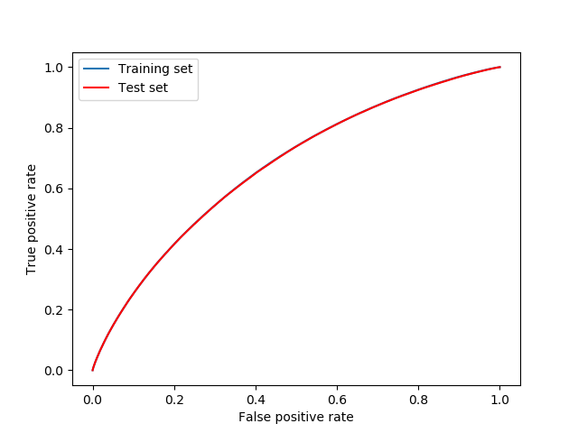
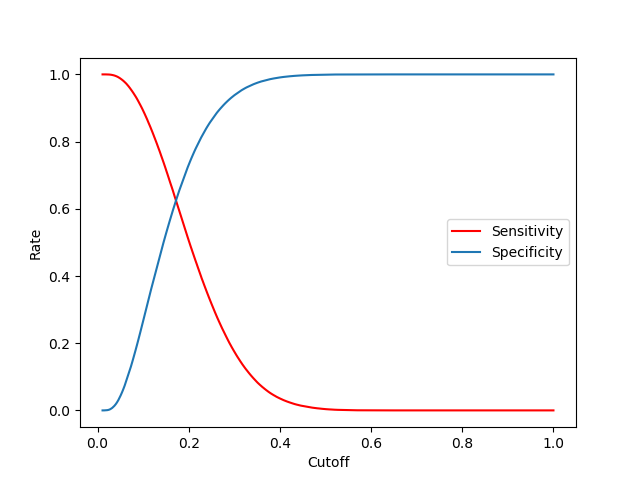
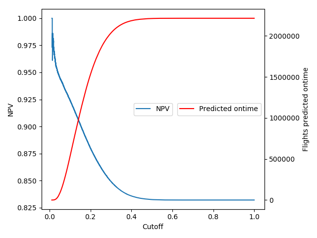
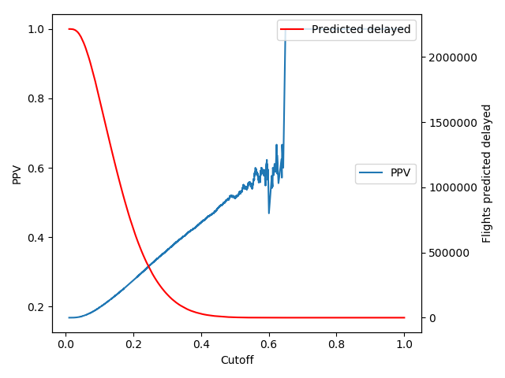
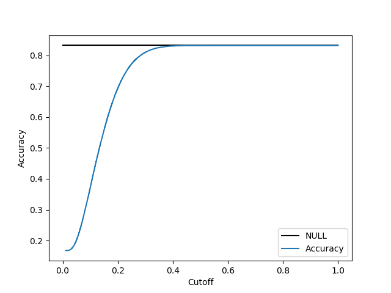

Summary
I studied flight ontime performance data which is accessable at the Bureau of Transportation Statistics. Based on all 5.5 million domestic flights from 2016 I generated a flight delay prediction model for flights within the USA. The size of the analyzed dataset is 600 MB.An application runs on heroku with a web interface ONTIMEPREDICTOR and the code can be found on github thedatabeat.
The dataset has 83% ontime flights, therefore if one predicts every flight ontime the
percentage of correctly predicted ontime flights is 83%.
In the model provided, the percentage of correctly prediced ontime flights is 89%.
The area under curve (AUC) score is 0.67.
After testing various machine learning algorithms such as logistic regression, support vector machines, random forest, neural networks, AdaBoost and gradient boosting, I choose logistic regression to generate the model. The other more sophisticated models did not generate better results due to insufficient structure in the data therefore I applied Occam's razor.
All the analysis is made on python using various libaries such as pandas and sklearn.
Prior Analysis
The features I took into account were MONTH, DAY_OF_MONTH, DAY_OF_WEEK, CARRIER, ORIGIN, DESTINATION, and CRS_DEPARTURE_TIME.First I studied the significance of each feature. I did this in the mindset of a 2-sided t-test. This went as follows: Fix a feature. Compute for several splits of the dataset (approximately 500 splits) the ratio of delayed flights for each value of these feature and take the maximal distance of the ratios for each split, this is the test quantity Q which just depends on the split. Then divide the mean of the Q 's by the standard deviation of the Q 's and multiply by the square root of the number of splits. The resulting number is big if the feature is significant and small otherwise.
From this analysis came out that some features are more significant than others. But the machine learning algorithms performed best when all features were fed.
To get numerical values for each feature I introduced dummy variables. The CRS_DEPARTURE_TIME was treated categorical by splitting it into one hour blocks.
Logistic Regression
I trained a logistic regression model on 60% of the data and cross validated it on the remaing 40%. The parameters were choosen in a way that best results were obtained. Note that the label positive means delayed and the label negativ means ontime. The first plot is the receiver operating curve, the area under this curve is the AUC-score which is 0.67. One can see that the curve is the same on the training and the test set which indicates
that the model is not overfitted.

I choose the prediction cutoff to be 0.17.
This is the point were
sensitivity=
(flights predicded delayed and delayed)/(delayed flights)
specificity = (predicded ontime and ontime)/(ontime flights)
are of equal size.

The negative prediction value = (predicded ontime and ontime)/(predicted ontime)
is the quantiy I mentioned in the summay. If this value is around 0.9 we classify a bit less than half of the flights ontime.

The positive prediction value = (predicded delayed and delayed)/(predicted delayed)
is low. It says how reliable is a delayed prediction. If one predicts all flights delayed then this prediction is right with probabilty
0.16. With the model I can reach a probability of 0.3 when I predict about 25 % of the flights delayed.

And finally the accuray which is not really better than the null hypothesis. 